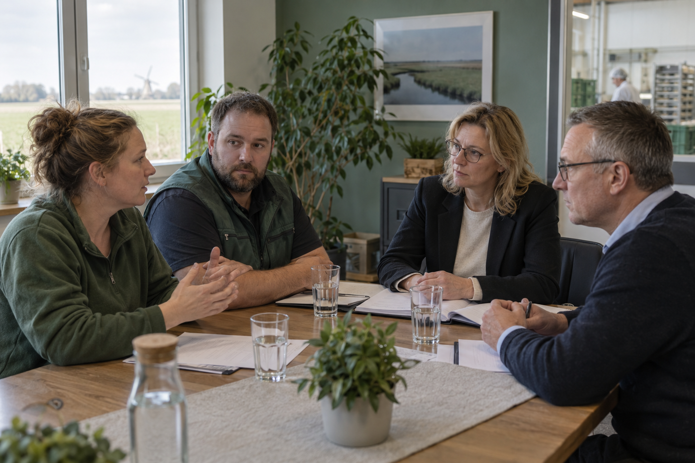

Handlungssituation
Materialzugriff

Am 26. April 2027 kündigt die Geschäftsführung an, den in LS 08 entwickelten Order-to-Delivery-Pilot bereits zum 1. Juni zu starten. Order to Delivery bezeichnet den Ablauf vom Kundenauftrag bis zur Lieferung; der Pilot ist dessen begrenzte Erprobung vor einer breiteren Einführung. Zwölf Tätigkeitsprofile – Beschreibungen von Aufgaben, Verantwortung und benötigten Fähigkeiten – verändern sich wesentlich. Sechs Beschäftigte sollen für mindestens sechs Monate in eine fachbereichsübergreifende Prozesszelle wechseln: ein Team aus verschiedenen Bereichen, das gemeinsam einen zusammenhängenden Ablauf bearbeitet. Kündigungen sind nicht geplant. Vier Wochen lang sollen Alt- und Neuprozess parallel laufen.
Der digitale Workflow steuert die Abfolge von Arbeitsschritten und Freigaben. Er speichert Auftragsstatus, Bearbeitungszeit, Rückfragen, Freigaben und den angemeldeten Nutzer. Die Geschäftsführung möchte damit zunächst Prozessengpässe erkennen. Im Entwurf des Dashboards – einer Übersicht wichtiger Prozessdaten – sind jedoch auch individuelle Bearbeitungszeiten auswählbar. Für das WMS (Warehouse Management System, ein Lagerverwaltungssystem) und die Prozessrollen, also Aufgaben und Verantwortungen im Ablauf, sind Schulungen vorgesehen, aber noch nicht für alle Teilzeit- und Schichtmodelle terminiert. Zudem sollen mobile Arbeit (Arbeiten außerhalb des betrieblichen Arbeitsplatzes), Schichtübergaben und Qualifikationszulagen aus LS 06 teilweise neu geregelt werden. Eine Qualifikationszulage ist eine zusätzliche Vergütung für festgelegte Kenntnisse oder Fähigkeiten; die konkreten Voraussetzungen sind hier noch zu klären.
Der Betriebsrat unterstützt grundsätzlich das Ziel, verspätete Aufträge und Doppelarbeit zu reduzieren. Er kritisiert jedoch den engen Zeitplan und die noch offenen Regeln. Einige Beschäftigte verlangen einen sofortigen Stopp, andere möchten den Pilot nicht verlieren, sondern klare Schutzbedingungen. Auch rechtlich ist nicht jede Frage gleich eindeutig: Arbeitszeit und technische Überwachung berühren konkrete Mitbestimmungsfelder; Personalplanung, Qualifizierung und Versetzungen besitzen eigene Regeln. Ob das Gesamtvorhaben bereits als Betriebsänderung nach § 111 des Betriebsverfassungsgesetzes (BetrVG) einzuordnen ist, muss anhand Umfang und möglicher Nachteile geprüft werden und darf nicht einfach behauptet werden.
Vor der Verhandlung am 7. Mai muss der Betriebsrat seine Position bündeln. Er benötigt einen realistischen, rechtlich fundierten Forderungskatalog, der zwischen unverzichtbaren Bedingungen, verhandelbaren Ausgestaltungen und längerfristigen Zielen unterscheidet.
KURZ PRÜFEN · HANDLUNGSSITUATION
1. Sachverhalt
Was macht die geplante Auswertung der Workflowdaten kritisch?
2. Auswertung
Wozu dient der Forderungskatalog des Betriebsrats?
3. Einordnung
Wie wird die Frage einer Betriebsänderung im Fall behandelt?